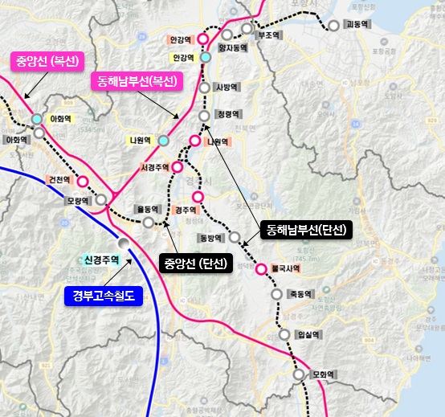
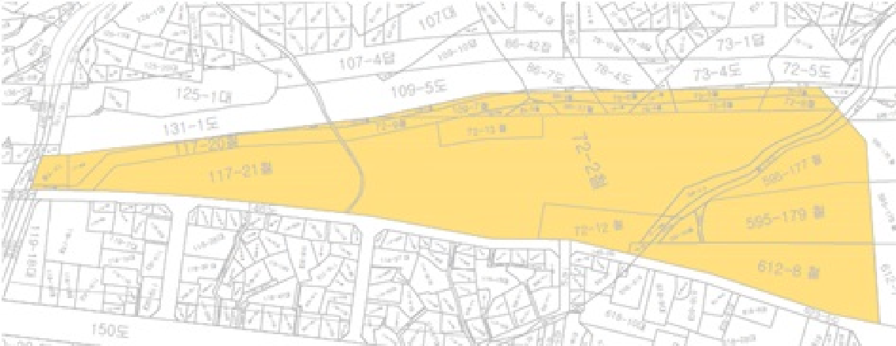

- 김천구미역
- 舊경주역
- 舊포항역
- 舊안동역
김천구미역 유휴부지 개발사업
일반현황
| 구분 | 현황 |
|---|---|
| 위치 |
· 대상지1: 경북 김천시 남면 옥산리 790일대
· 대상지2: 경북 김천시 남면 옥산리 769-2일대 |
| 면적 | 14,120m² |
| 현재용도 | 나대지 |
| 용도지역 | 자연녹지지역 |
| 입지현황 |
· 대상지1: 면적 1,120m²의 장방형 부지로서 김천구미역(5m 이격) 되어있어 접근성 용이 · 대상지2: 면적 13,000m²의 장방형 부지로 김천구미역(20m 이격) 되어있어 접근성이 양호하고 부지의 대각선 방향으로 개거(開渠;개수로)가 있음 |
| 접근성 | 김천구미역 |
| 지자체 활용계획 또는 협의사항 | 해당부지 매수 당시 지목(전,답)으로 되어있어 김천시와 개발행위 등 관련해서 협의 필요 |
부지현황
위치도

유의사항
-
국가가 소유·관리하는 철도시설(부지 포함)에 건물이나 그 밖의 시설물을 설치하려는 자에게 「국유재산법」
제18조(영구시설물 축조 금지)에도 불구하고점용허가를 통해 영구시설물 축조 가능 - 점용허가 받은 자가 설치한 시설물 전대 금지조항 없음(임대사업 가능)
- 점용허가기간은 건물 종류와 구조에 따라 최대 30년 이내 가능
- 사업대상지의 현황(개발시점, 대상지 범위 등)은 일부 변경될 수 있으니 개발사업 제안 희망자는 자산개발 담당부서로 문의하여 확인하시기 바라며,
개발사업 제안 및 절차는 법령 및 자료집의 법령과 제규정을 참조하시기 바랍니다. - 개발사업 담당자 연락처(TEL 042-607-4247, FAX 042-607-3829)
舊)경주역 철도시설 개발사업
일반현황
| 구분 | 현황 |
|---|---|
| 위치 |
· 경주시 성동동 100-2번지, 구정동 459-12번지 일원 · 동해남부선 부조역∼모화역(경주시 폐선) · 중앙선 아화역∼서경주역(경주시 폐선) |
| 면적 |
· 동해남부선(연장:53.2km, 면적:930천m²) · 중앙선(연장:27.1km, 면적:732천m²) |
| 현재용도 | 폐선예정부지 |
| 용도지역 | 자연녹지지역, 일반상업지역 등 |
| 입지현황 | 경주 주요 관광지(불국사 등) 및 도심지 위치 |
| 접근성 | 신경주KTX역 근접 |
| 지자체 활용계획 또는 협의사항 | 폐선 예정부지 도시관리계획 수립용역 시행 중 |
부지현황
위치도
유의사항
-
국가가 소유·관리하는 철도시설(부지 포함)에 건물이나 그 밖의 시설물을 설치하려는 자에게 「국유재산법」
제18조(영구시설물 축조 금지)에도 불구하고점용허가를 통해 영구시설물 축조 가능 - 점용허가 받은 자가 설치한 시설물 전대 금지조항 없음(임대사업 가능)
- 점용허가기간은 건물 종류와 구조에 따라 최대 30년 이내 가능
- 사업대상지의 현황(개발시점, 대상지 범위 등)은 일부 변경될 수 있으니 개발사업 제안 희망자는 자산개발 담당부서로 문의하여 확인하시기 바라며,
개발사업 제안 및 절차는 법령 및 자료집의 법령과 제규정을 참조하시기 바랍니다. - 개발사업 담당자 연락처(TEL 042-607-4247, FAX 042-607-3829)
舊)포항역 복합개발사업
일반현황
| 구분 | 현황 |
|---|---|
| 위치 | 경상북도 포항시 북구 용흥동 72-2번지 일원 |
| 면적 | 34,933.60m² |
| 현재용도 | 폐선예정부지 |
| 용도지역 | 도시지역, 자연녹지지역 |
| 입지현황 | 원도심에 인접한 舊포항역 부지 |
| 접근성 | 6km 내 KTX 포항역 |
| 지자체 활용계획 또는 협의사항 | 포항시와 용도지역 변경 가능여부 등 협의 필요 |
부지현황
위치도
유의사항
-
국가가 소유·관리하는 철도시설(부지 포함)에 건물이나 그 밖의 시설물을 설치하려는 자에게 「국유재산법」
제18조(영구시설물 축조 금지)에도 불구하고점용허가를 통해 영구시설물 축조 가능 - 점용허가 받은 자가 설치한 시설물 전대 금지조항 없음(임대사업 가능)
- 점용허가기간은 건물 종류와 구조에 따라 최대 30년 이내 가능
- 사업대상지의 현황(개발시점, 대상지 범위 등)은 일부 변경될 수 있으니 개발사업 제안 희망자는 자산개발 담당부서로 문의하여 확인하시기 바라며,
개발사업 제안 및 절차는 법령 및 자료집의 법령과 제규정을 참조하시기 바랍니다. - 개발사업 담당자 연락처(TEL 042-607-4247, FAX 042-607-3829)
舊)안동역 복합시설 개발사업
일반현황
| 구분 | 현황 |
|---|---|
| 위치 | 경상북도 안동시 법흥동 234-3번지 일원 |
| 면적 | 174,522m² |
| 현재용도 | 폐선예정부지 |
| 용도지역 | 자연녹지지역 |
| 입지현황 | 중앙선 안동정거장 부지로, 구도심 중앙에 위치 |
| 접근성 | 안동역 |
| 지자체 활용계획 또는 협의사항 |
안동시 공원화사업과 연계한 공동주택(44,500m²), 근생시설(2,500m²) 부지 조성 후 분양 ※ 안동시와 협의하여 용도지역 변경 가능 |
부지현황
위치도

유의사항
-
국가가 소유·관리하는 철도시설(부지 포함)에 건물이나 그 밖의 시설물을 설치하려는 자에게 「국유재산법」
제18조(영구시설물 축조 금지)에도 불구하고점용허가를 통해 영구시설물 축조 가능 - 점용허가 받은 자가 설치한 시설물 전대 금지조항 없음(임대사업 가능)
- 점용허가기간은 건물 종류와 구조에 따라 최대 30년 이내 가능
- 사업대상지의 현황(개발시점, 대상지 범위 등)은 일부 변경될 수 있으니 개발사업 제안 희망자는 자산개발 담당부서로 문의하여 확인하시기 바라며,
개발사업 제안 및 절차는 법령 및 자료집의 법령과 제규정을 참조하시기 바랍니다. - 개발사업 담당자 연락처(TEL 042-607-4247, FAX 042-607-3829)